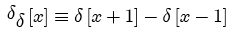

A positive unit delta function located at -1 and a negative unit delta function located at -1

The symmetric delta pair may be scaled:
Parameters:
Support: 2 (scaled by width)
Area: 0
Symmetry: odd
Read more about the Dirac delta at:
Read more about the Kronecker delta at: